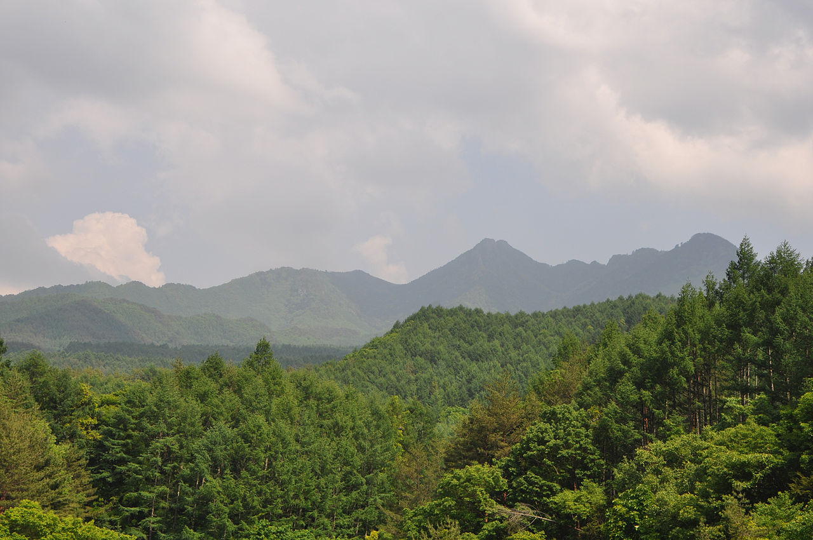
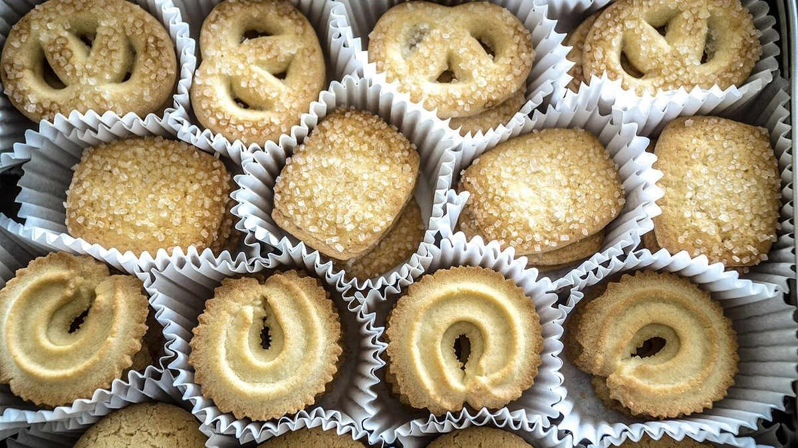
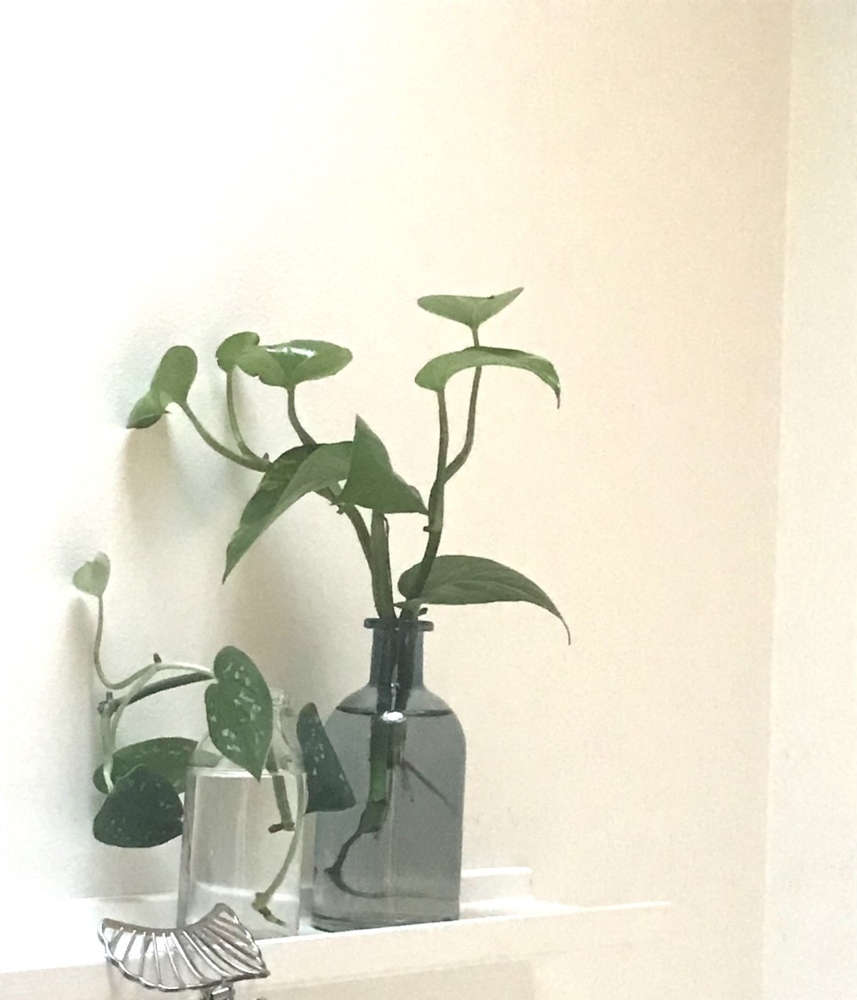

circulo シルクロ
登米市迫町のカフェ
イメージ写真です。実際のお店の様子ではありません。
ひと息つく時間を、迫町で。(制作側の案)
お店メモ
| 店名 | circulo シルクロ |
|---|---|
| 住所 | 宮城県登米市迫町新田小友65-6 |
| 電話 | 0220-23-8404 |
| https://instagram.com/circulo126 | |
| 営業時間 | 準備中(お問い合わせください) |
| 定休日 | 準備中(お問い合わせください) |
| 席数 | 準備中(お問い合わせください) |
| 駐車場 | 準備中(お問い合わせください) |
掲載していない項目は、お電話またはInstagramでご確認ください。


ひと息つく、ちいさな居場所(制作側の案)
これは制作側のコンセプト案であり、お店ご自身の考えではありません。迫町での毎日の合間に、ふと立ち寄って一息つける。そんな時間を、写真と余白で表現する案です。お店の本当の姿は、ぜひお電話やInstagramでご確認ください。
ご連絡先
ご来店前に、お電話でご確認ください。
宮城県登米市迫町新田小友65-6